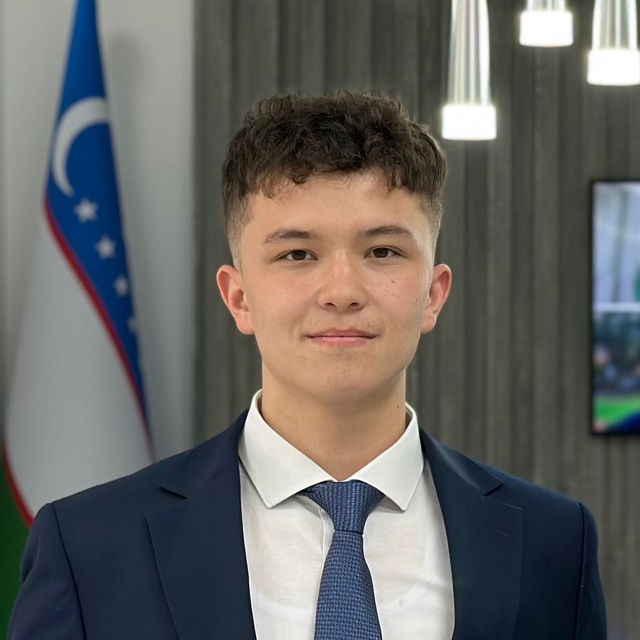

FLEX · YYGS · UWC · Babson · LaunchX uchun
Amerikada To'liq Grant bilan
o'qish endi orzu emas.
12 haftalik mentorlik dasturi — profildan arizagacha, esseden intervyugacha to'liq qo'llab-quvvatlash.
SIZNING JAMOANGIZ
Siz bilan ishlaydiganlar

Admission Mentor
Bobirjon Bakhtiyorov
Harvard, Yale, Duke kabi top universitetlarga o'quvchilarni qabul qildirgan tajribali admission mentor.

Program Mentor
Doniyor Kamoldinov
YYGS g'olibi, UWC Dilijan talabasi va Veritas AI alumni — real grant tajribasi bilan sizni tayyorlaydi.
Program Director
Michael Nott
Global Scholars Prep dasturining asoschisi va yo'naltiruvchisi. Amerika ta'lim tizimi bo'yicha keng tajribaga ega.
Program Mentor
Abrorbek Samijonov
FLEX, YYGS, Babson va LaunchX g'olibi — bir nechta to'liq grant yutgan mentor sifatida sizni tayyorlaydi.
DASTURLAR HAQIDA
Qaysi dastur siz uchun?
 Yale · To'liq Grant
Yale · To'liq Grant
YYGS DASTURI
Yale Universitetida 2 Haftalik Akademik Dastur
Yale Young Global Scholars — dunyoning eng nufuzli universiteti Yale kampusida 2 hafta davom etadigan akademik boyitish dasturi. To'liq grant olgan nomzodlar uchun barcha xarajatlar qoplanadi.
✦ Dastur Beradi
- Yale kampusida yashash
- Professor va ekspertlar bilan darslar
- Global talabalar tarmog'i
- Akademik sertifikat
- To'liq moliyaviy yordam
✦ Tanlov Jarayoni
- Yo'nalish tanlash (track)
- 400 so'zli "Deep Essays"
- Bragsheet va faoliyatlar
- Tavsiyanoma xati
- Moliyaviy yordam arizasi
Hamma orzu qila oladi.
Lekin ozchilik bu orzuga erishadi.
- Yuqori IELTS ball
- Ko'p sertifikatlar
- "Shablon" essе
- Maktab diplomlari
- Yolg'iz tayyorlanish
- Kuchli shaxsiy hikoya
- Liderlik va real loyihalar
- Dasturga mos strategiya
- Yodda qoladigan esse
- Mentor bilan tayyor nomzod
DASTUR TUZILMASI
12 Haftalik Strategik Yo'l Xaritasi
Profildan Grantgacha — Har Qadamda Biz Bilan
FLEX Strategiyasi
- ✦ G'olib Strategiyasi: Shaxsiyat ingliz tilidan muhimroq — nima uchun?
- ✦ Esse Masterklass: Liderlik va aktivlikni esseda ko'rsatish + 1-ga-1 tahrir
- ✦ Testlar va Intervyu: ELTiS, Reading va "Stress-Intervyu" repetitsiyalari
- ✦ Jamoaviy O'yinlar: Moderator e'tiborini tortish va guruhni boshqarish taktikasi
Yale Standarti
- ✦ Yale Standarti: Yale qanday o'quvchilarni qidiradi? To'g'ri yo'nalish tanlash
- ✦ Profil Qurish: Bragsheet va kuchli tavsiyanomalar olish sirlari
- ✦ Creative Writing: 400 so'zli "Deep Essays" — mantiqiy va hayratlanarli esselar
- ✦ Financial Aid: Grant uchun moliyaviy hujjatlarni xatosiz tayyorlash
UWC Logikasi
- ✦ UWC Logikasi: Intellektual qiziqish va ijtimoiy mas'uliyatni profilga singdirish
- ✦ Hidden Scorecard: Guruh topshiriqlarida g'olib bo'lishning yashirin qoidalari
- ✦ Panel Intervyu: Eng qiyin va kutilmagan savollarga mantiqiy javob berish
- ✦ Video Pitch: 60 soniyada o'zingizni eng yaxshi nomzod sifatida "sotish"
Babson & LaunchX
- ✦ Babson & LaunchX: Dunyoning #1 tadbirkorlik dasturlari va "Startup" ideologiyasi
- ✦ College Application: Kurs tajribasini Common App (Top Universitetlar) arizasida ishlatish
- ✦ Global Portfel: Kelajakdagi barcha grantlar uchun universal va g'olibona profilni yakunlash
Kurs tugaydi, lekin hamkorligimiz ariza topshirilguncha davom etadi:
Full Application Management
Arizalarni birma-bir to'ldirish va barcha yashirin "mini-esselar" ustida ishlash
Deep Editing
Har bir esseingizni grant yutish darajasiga chiqquncha cheksiz tahrir
Document Checklist
Moliyaviy hujjatlar va tavsiyanomalarni xalqaro standartga keltirish
Priority Support
Arizalar mavsumida har qanday savolingizga 24/7 ustuvor javob
Offline Finalist Prep
Intervyu bosqichlariga yuzma-yuz, real sharoitda tayyorgarlik
SAVOLLAR
Tez-tez beriladigan savollar
Kursga Yoziling
Global Scholars Prep — har bir o'quvchini qabul qilmaydi. Dasturga mos, ishlashga tayyor nomzodlar bilan ishlaymiz.
Ariza qoldiring. Mos bo'lsangiz, keyingi bosqichlarni tushuntiramiz.
Arizangizni ko'rib chiqib, mos bo'lsangiz bog'lanamiz.
Bepul Yopiq Vebinar
Kichik, tanlanganlar uchun vebinar — to'liq grantga olib boradigan yondashuvimizni qisqacha ko'rsatamiz.